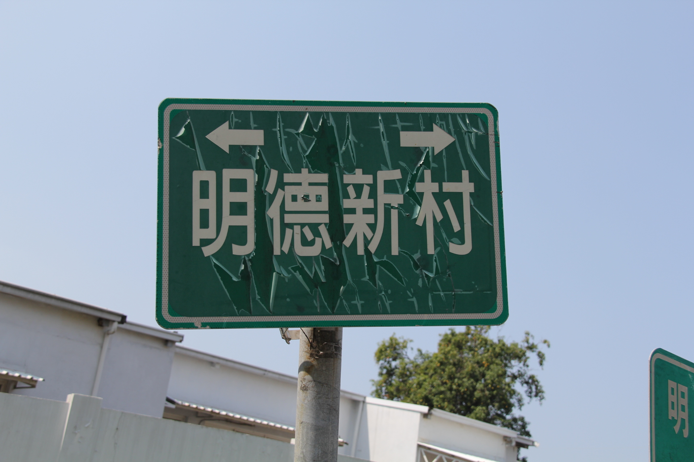
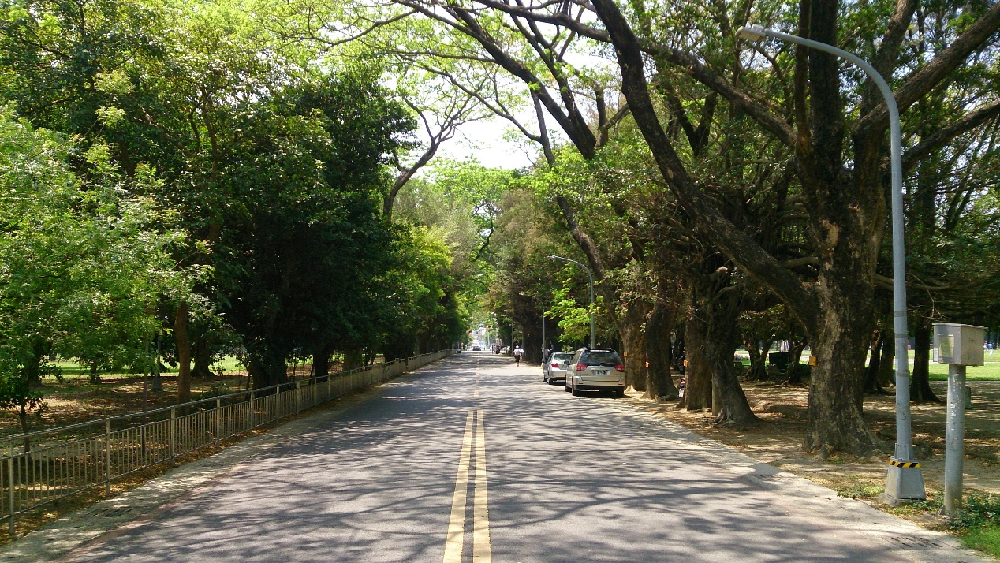
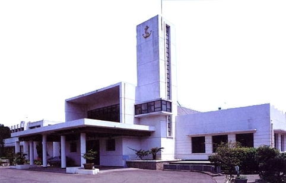
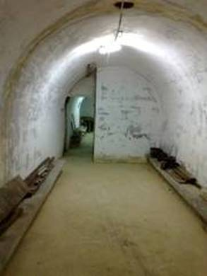

瀏覽人數 :
明德新村 - 歷史
 明德新村西鄰海軍軍區中正路，東到「海平路」和「建業新村」相望，南至「海軍體育場」及「左營活動中心」，北與「合群新城」為鄰。全村52戶，面積約有二萬多坪，獨門獨院日式建築，是全台灣最高級的一處日遺眷舍。38年5月至43年7月海軍總部駐地左營期間，早期之海軍將領們（擔任艦隊海上作戰職務）皆曾居住於明德新村，故有「將軍村」之稱。
本園區現存日遺軍事建築尚有：
位於「明德賓館」北側海富路與海功路交叉的碉堡，兩個對外的射口尚成開放狀況並未堵塞。
昭和16年由日本駐台海軍新建造寬約3公尺，長約30多公尺的大型公用戰壕，村內散佈3座小型簡易混凝土防空洞。
園區北邊的國軍左營海軍總醫院曾是日本的「海軍病院」。這些事證也顯示日本人為其南侵行動所做的戰爭準備。
全園區道路規劃完整，原區東邊海富路主要是由「雨豆樹」（樹齡100年以上）構成的「左營綠色隧道」，園區西邊的海景街兩旁有著高大的樟樹，南邊實踐路則是日遺的游泳池、「中山堂」、「四海一家」、明德國小、立德國中、台灣豫劇隊等。高雄市政府於民國99年，依據文化資產保存法，將左營海軍明德、建業、合群眷村及其以南相關設施，登錄為景觀範圍並予公告：102年3月27日經國防部選定為眷村文化保存園區。
綠色隧道
為於海軍體育場周邊，綠帶以高大的常綠喬木（雨豆樹、木麻黃、樟木等，許多樹齡皆在60年以上）為主，提供休閒舒適的微氣候，也使硬體設施與周遭環境更為協調。
四海一家
其此原是日本「水交社」（海軍軍官俱樂部），大戰時被美機炸毀，民國39年重建，外形似艦船向東航行的建築。西元1995年，被建築學者李乾朗教授評為「深具現代主義Cubism（立體派）精神之傑作」
此房舍提供差旅官兵住宿之用，附設圖書館、餐廳、酒吧、禮堂（舞池）、彈子房、橋牌室等相關設施。當時開幕當天舉辦雞尾酒會及盛大舞會招待來賓。以往每逢周末假日就舉辦舞會，海軍軍樂隊擔任現場伴奏，當年許多年輕高市女孩的第一支舞，就是在這跳出的。小說家馮馮的鉅著《微曦》中，就有描寫在左營海軍「四海一家」住宿、開舞會的情節。
戰壕
左營是當時日軍在台最重要的海軍基地，明德新村（昭和16年建造）為日本海軍高階軍官居住，亦為美軍空中攻擊的目標。為避難所需，除每一巷道有小型防空洞外，特又建此大型防空戰壕，約可容200人。其用途係專為較高階軍官而設，惟從洞內有儲水池設備研判，以供戰時指揮所使用之可能性頗高。